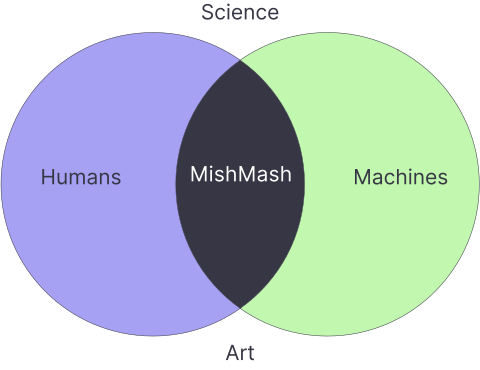
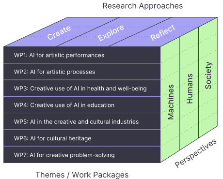

Rules · Learning · Evolution — with live demos
Connect a MIDI keyboard or use keyboard keys (Z=C4, ↑/↓ = octave)
Listen to a short clip. Who made it?
Every song there was generated from a text prompt.
A Norwegian Research Centre for AI & Creativity
About usA national research centre exploring the intersection of AI and creativity, with a particular focus on music and the arts.
Founded 2025 · Led by University of Oslo (UiO) · National partners across Norway


The Bubble (emblem) and the Cube — seven work packages combining creating, exploring, and reflecting on AI for machines, humans, and society.
Tools that support musicians — not just automation.
Copyright, attribution, consent, and cultural impact.
Workshops, performances, and PhD/postdoc fellowships at the human–AI frontier.
A spectrum — from fully programmed to fully learned.
Today's question: where does music-making sit on this spectrum — and what changes as we move right?
Our demos are MIDI · Jukebox, Riffusion & Suno generate audio directly.
Musical knowledge written down as explicit rules.
Harmonisers · Counterpoint · L-systems
Models learn musical style from data.
Markov chains · Neural nets · Transformers
Melodies evolve by selection and mutation.
Genetic algorithms · GenJam · Co-evolution
Each chapter starts simple and gets progressively more advanced — press ↓ to go deeper, or → to skip ahead
Algorithmic Composition & Music Theory as Code
Rule-Based🎧 Listen to the Illiac Suite — the 1957 computer quartet still sounds surprisingly modern.
C-major harmonisation (every note → triad)
| Note | Scale Degree | Chord | Quality | Notes |
|---|---|---|---|---|
| C | I | C major | major | C – E – G |
| D | ii | D minor | minor | D – F – A |
| E | iii | E minor | minor | E – G – B |
| F | IV | F major | major | F – A – C |
| G | V | G dom7 | dominant 7th | G – B – D – F |
| A | vi | A minor | minor | A – C – E |
| B | vii° | B dim | diminished | B – D – F |
Rule: chord_notes = scale_degree_intervals + played_root
Highlights update from the Key/Mode selector in the Chord Harmoniser demo.
C major
I ii iii IV V vi vii°
Tip: try switching to Lydian/Phrygian/Locrian to see how the chord qualities change.
Play any note on your MIDI keyboard (or use Z–M keys). The algorithm adds the diatonic chord instantly.
💡 Keyboard shortcut: Z=C4, S=C#, X=D … ↑/↓ = octave shift
A "syntax" for valid musical phrases.
Recursive rewriting rules → fractal-like melodies.
State what must hold; a solver finds the notes.
States = intro / verse / chorus; rules pick transitions.
A music theorist's knowledge, encoded.
Probabilistic rules learned from data — the bridge to Chapter 02.
Rules that governed 18th-century counterpoint — and still guide AI music systems today
These rules can be encoded directly in software — or learned from data (Section 2).
Record a lower voice — the algorithm adds an upper voice following Bach's rules.
Record a cantus firmus or load the Bach seed.
Rules written as code — and rewritten live, on stage
live_loop :melody do
use_synth :piano
play scale(:c4, :major).choose
sleep [0.25, 0.5].choose
end
Sonic Pi — four lines of rules = endless melody
strudel.cc runs in the browser — Sonic Pi and TidalCycles on your laptop.
Club nights where the code is projected while people dance to it.
Statistical Models & Neural Networks
LearningInstead of programming "no parallel fifths", we show the model thousands of Bach chorales — it discovers the rule itself.
The simplest statistical music model
"Given the current note, what is the probability of each possible next note?"
Transitions after G, counted from Bach (C major). Thicker arrow = more likely.
Transition probabilities extracted from Bach's C-major Prelude BWV 846.
Click Record and play a melody, or use Bach Seed.
Going deeper than Markov chains — four families
Reads notes one at a time, with a "memory" of what came before.
Sees the whole piece at once via attention — details soon.
Learns a "map" of styles you can morph between.
Sculpts music out of pure noise — details soon.
Let's hear one first — then look inside the two families that dominate today.
Google Magenta's melody_rnn (LSTM) runs entirely in the browser.
Click Load Model (requires internet). Model ~4 MB.
8 coarse buttons map to expressive piano notes via a latent space (after Magenta's Piano Genie).
Press and hold buttons 1–8 — lower = darker, higher = brighter.
Big language-style models read tokens — so we turn notes into a vocabulary.
Same trick as ChatGPT's words: a melody becomes a sentence, and composing becomes predicting the next token.
To predict the next note, attention weighs every previous note — near and far.
Can "look back" at a theme from minutes ago.
Notes become tokens — same architecture as ChatGPT.
MuseNet, MusicGen, MusicLM, Suno, Udio.
The Creativity slider in our demo is temperature — it reshapes the next-note probabilities.
The model never picks one "right" note — it rolls weighted dice. Temperature loads the dice.
Generate audio by learning to remove noise, step by step.
Add noise to real music; learn to undo it.
Start from random noise, denoise ~50 steps.
Riffusion, Stable Audio, AudioCraft.
Trade-off vs transformers: superb audio fidelity, but many steps → slower, harder in real-time.
Imitating data teaches style — feedback teaches taste.
RLHF is how chatbots got helpful — music models are next.
It's GenJam's audience-as-fitness idea (1994) — at industrial scale. Chapter 03 saw it coming.
GPT-2 on classical MIDI. openai.com
Raw audio with vocals. openai.com
Text prompt → music. HuggingFace
8 buttons → piano. glitch.me
Diffusion on spectrograms. riffusion.com
Harmonise like Bach. g.co/arts
For full songs from a text prompt, try suno.com or udio.com live with the audience.
Composition by Natural Selection
EvolutionaryWhat makes a melody "good"? — the hardest problem in evolutionary music
💡 Combined: rules + a learned "beauty scorer" — best of both worlds.
Population of 24 melodies. Switch to Audience (IGA) mode to rate melodies like GenJam.
Click Start to watch the evolution unfold.
When "score it and pick the best" isn't enough
Reward being different instead of "good" — stops every melody converging on the same safe tune.
Keep the best melody per niche (calm, jazzy, chaotic…), not one global winner.
Melodies evolve against critics that also evolve — an arms race. Sound familiar? GANs rediscovered this.
Modern systems: evolutionary search guided by neural critics, tuned by human feedback — all three paradigms at once.
| Property | Rule-Based | Learning-Based | Evolutionary |
|---|---|---|---|
| Needs training data? | ✗ | ✔ | ✗ |
| Transparent / explainable | ✔ | ✗ | ~ |
| Real-time capable | ✔ | ~ | ~ |
| Creative novelty | Low | High | High |
| Controllable output | ✔ | Partially | Via fitness |
| Scales with compute | ✗ | ✔ | ~ |
In practice, strong systems mix all three: rules for structure, learning for style, search for surprise.
"Heart on My Sleeve" (2023) — an AI voice-clone track went viral, then was pulled from streaming. Who owns a voice?
Major record labels sued both companies (2024) over training on copyrighted recordings.
Most training data was never opted in. How should artists be credited — and paid?
These are exactly the questions MishMash researches.
💬 If you prompt it, did you compose it?
💬 Would you pay for AI music? Perform with it?
💬 What should a machine never do in music?
Slides + interactive demos:
alexarje.github.io/Music-AI-introduction
Open in Chrome/Edge with a MIDI keyboard connected. Use Z–M keys if no keyboard.
Open issues on GitHub for more demos, new approaches, or corrections.
Magenta Colab notebooks · Coursera Music AI specialisation · NeurIPS ISMIR proceedings